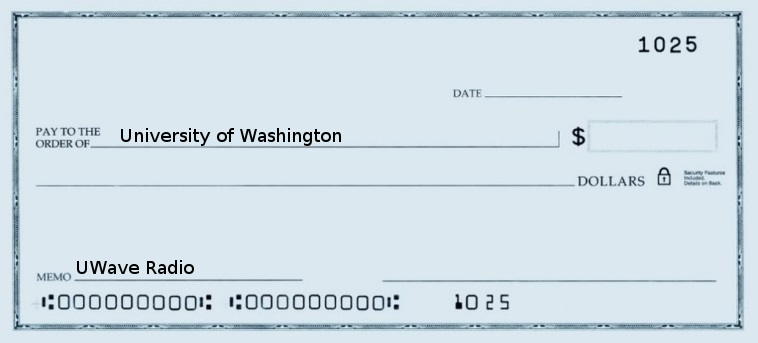

Donate
We accept donations through our gift account with the UW. Click here to donate to UWave Radio.UWave Radio gift account FAQ
- How much can I donate? Donors must give a minimum of $10; that is the only restriction. There is no maximum amount that you can donate; the more the merrier! Those who wish to donate amounts larger than $1,000, please contact business@uwave.fm to clear with our Business department first.
- Do I have to donate online?
No. You can also donate with a check or cash by mail to:
Box 358528 118115 Campus Way NE, UW1, Suite 281 Bothell WA 98011-8246 For check donations, please pay to the order of the University of Waishington. On the memo line, write “UWave Radio” as shown below. Please note that it may take some time for you to receive acknowledgment for a check or cash contribution.

- What is the money used for? As a growing community radio station, UWave Radio accumulates a big bill. We want to have as much saved in emergency funds as we can so we can continue to provide quality radio to our listeners. The money earned in the gift account is used by UWave Radio only, and will be used for things such as to update our music collection, pay for new equipment, purchase promotional materials, and fund events. During our fund drives, UWave Radio will outline the specific goal for funds. For example, if we need $800 for a new channel control mixer, we will announce our goal on air (and also describe what a channel control mixer is). The money we receive during that fund drive will go only to the purchase(s) we announced.
- What’s in it for me? By supporting UWave Radio, you are helping us provide quality on-air programming to the community. The more supporters we have, the better we are able to fund and accomplish our goals as an organization.
“UWave Radio is the campus-based community station of the Bothell area and beyond. We are a center for community engagement, a hub for underrepresented voices and music, an environment for professional development, and a catalyst for social justice.” For more information on UWave Radio, please visit our about page. Thank you for supporting UWave Radio, UWB’s student-run community radio station!